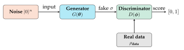

Chapter 14: Quantum Generative Models¶
Generative modelling aims to learn and sample from a data distribution. Classical counterparts — GANs, VAEs, normalizing flows — have achieved remarkable success. Quantum generative models leverage quantum superposition and entanglement to represent distributions that may be hard to capture classically. This chapter covers Quantum GANs (QGANs), Born machines, and Quantum Boltzmann Machines (QBMs).
Learning Objectives
By the end of this chapter, you will be able to:
-
Describe the QGAN architecture and its training adversarial objective
-
Implement a Born machine and train it via maximum mean discrepancy
-
Explain Quantum Boltzmann Machines and their thermal sampling
-
Compare quantum and classical generative models in terms of expressibility
-
Apply QGANs to generate quantum state distributions in PennyLane
14.1 Quantum Generative Adversarial Networks¶
14.1.1 Classical GAN Review¶
A GAN (Goodfellow et al. 2014) comprises:
-
Generator \(G_\theta: z\mapsto x'\) – maps noise to fake samples
-
Discriminator \(D_\phi: x\mapsto[0,1]\) – classifies real vs. fake
Minimax objective:
14.1.2 QGAN Architecture¶
The Quantum GAN (Lloyd & Weedbrook, 2018; Dallaire-Demers & Killoran, 2018) (Lloyd and Weedbrook 2018; Dallaire-Demers and Killoran 2018) replaces the generator (or both components) with parameterized quantum circuits:

Quantum generator: A PQC \(G(\boldsymbol{\theta})\) acting on \(|0\rangle^n\) produces state \(\sigma(\boldsymbol{\theta}) = G|\mathbf{0}\rangle\langle\mathbf{0}|G^\dagger\).
Quantum discriminator: A PQC \(D(\boldsymbol{\phi})\) followed by a single-qubit measurement estimates the probability that the input is real:
14.1.3 QGAN Training Objective¶
This is the quantum analogue of the Wasserstein GAN objective, measuring the trace distance between real and generated quantum state distributions.
Solved Example 14.1
Problem: A 2-qubit QGAN generator applies \(R_y(\theta_1)R_y(\theta_2)\) followed by a CNOT. What distribution over computational basis states does it produce for \(\theta_1=\pi/4\), \(\theta_2=0\)?
Solution: Initial state: \(|00\rangle\). After \(R_y(\pi/4)\otimes R_y(0)\): \(|00\rangle\to(\cos\frac{\pi}{8}|0\rangle+\sin\frac{\pi}{8}|1\rangle)\otimes|0\rangle\).
After CNOT (control=qubit 0, target=qubit 1): \(\cos\frac{\pi}{8}|00\rangle + \sin\frac{\pi}{8}|11\rangle\) (a Bell-like state).
Distribution: \(P(00) = \cos^2\frac{\pi}{8} \approx 0.854\), \(P(11) = \sin^2\frac{\pi}{8} \approx 0.146\), all others \(= 0\).
This generator produces entangled outputs, unlike a separable classical neural network generator.
14.2 Born Machines¶
Definition: Born Machine
A Born machine (Liu and Wang 2018) is a quantum circuit \(U(\boldsymbol{\theta})\) whose measurement outcome distribution
is trained to match a target distribution \(q(\mathbf{x})\) over bitstrings \(\mathbf{x}\in\{0,1\}^n\).
The Born rule naturally produces a valid probability distribution over \(2^n\) bitstrings, making the Born machine a natural quantum generative model.
14.2.1 Training via Maximum Mean Discrepancy¶
The Maximum Mean Discrepancy (MMD) between \(p_\theta\) and \(q\) is:
where \(k(\cdot,\cdot)\) is a kernel (e.g. Gaussian or Hamming kernel on bitstrings).
MMD gradient via PSR: The gradient \(\partial_\theta\,\text{MMD}^2\) can be estimated using parameter-shift rules on the quantum circuit.
14.2.2 Expressibility of Born Machines¶
Born machines can represent distributions that are hard classically:
Important
Quantum advantage for generation: Liu & Rebentrost (2018) showed that certain Born machines with depth-\(O(\log n)\) circuits can sample from distributions that require \(\Omega(n^{1/4})\)-depth classical circuits. Specifically, output distributions of random quantum circuits (RQCs) are believed to be classically hard (quantum supremacy experiments).
14.3 Quantum Boltzmann Machines¶
Definition: Quantum Boltzmann Machine (QBM)
A Quantum Boltzmann Machine (Amin et al. 2018) is a generative model whose distribution is defined by a quantum Hamiltonian:
where \(Z(\boldsymbol{\theta}) = \mathrm{Tr}[e^{-H(\boldsymbol{\theta})/T}]\) is the partition function, \(T\) is temperature, and \(H(\boldsymbol{\theta})\) is a parameterized quantum Hamiltonian.
Hamiltonian structure:
where \(h_i, J_{ij}\) are bias/coupling parameters (classical RBM terms) and \(\Gamma\) is a transverse field (quantum term enabling quantum tunneling).
14.3.1 Training QBMs¶
The log-likelihood gradient for a QBM:
where \(O_k\) is the observable corresponding to \(\theta_k\), \(\rho_\mathbf{v}\) is the clamped state (visible units fixed to data), and \(\rho\) is the free state (thermal). Computing these requires approximating Gibbs states, which is hard classically but natural on quantum annealers (e.g. D-Wave).
Note
D-Wave quantum annealers can directly sample from the Gibbs distribution \(\rho(\boldsymbol{\theta})\) of Eq. (14.6) for Ising-type Hamiltonians, making them natural hardware for QBM training.
14.4 Implementation: QGAN for Continuous Distributions¶
import pennylane as qml
import numpy as np
import torch
import torch.nn as nn
import matplotlib.pyplot as plt
n_qubits = 4
n_layers = 2
dev_gen = qml.device("default.qubit", wires=n_qubits)
dev_disc = qml.device("default.qubit", wires=n_qubits)
# -- Generator --------------------------------------------------
@qml.qnode(dev_gen, interface="torch", diff_method="parameter-shift")
def generator(weights):
"""PQC generator: maps |0> to target-like state distribution."""
qml.StronglyEntanglingLayers(weights, wires=range(n_qubits))
return [qml.probs(wires=i) for i in range(n_qubits)]
# -- Discriminator (classical neural net) ----------------------
class ClassicalDiscriminator(nn.Module):
def __init__(self, in_dim=n_qubits):
super().__init__()
self.net = nn.Sequential(
nn.Linear(in_dim, 16),
nn.ReLU(),
nn.Linear(16, 8),
nn.ReLU(),
nn.Linear(8, 1),
nn.Sigmoid()
)
def forward(self, x):
return self.net(x).squeeze(-1)
# -- Born machine (pure quantum generator) ---------------------
@qml.qnode(dev_gen, interface="torch", diff_method="parameter-shift")
def born_machine(weights):
"""Born machine: sample bitstrings from circuit distribution."""
qml.StronglyEntanglingLayers(weights, wires=range(n_qubits))
return qml.probs(wires=range(n_qubits))
# -- Training setup --------------------------------------------
gen_weights = torch.tensor(
np.random.uniform(-np.pi, np.pi, (n_layers, n_qubits, 3)),
dtype=torch.float32, requires_grad=True
)
disc = ClassicalDiscriminator()
opt_g = torch.optim.Adam([gen_weights], lr=0.05)
opt_d = torch.optim.Adam(disc.parameters(), lr=0.01)
# Target: bimodal distribution over 4-bit strings
# Real data: mix of strings near 0000 and 1111
def sample_real(batch=32):
data = []
for _ in range(batch):
if np.random.rand() > 0.5:
data.append([0.9, 0.1, 0.9, 0.1]) # near 0101
else:
data.append([0.1, 0.9, 0.1, 0.9]) # near 1010
return torch.tensor(data, dtype=torch.float32)
def sample_generator(weights, batch=32):
"""Sample marginal probabilities from generator."""
probs = generator(weights) # list of 4 [p0, p1] tensors
samples = torch.stack([p[:, 0] for p in probs], dim=-1) # P(0) per qubit
return samples.expand(batch, -1)
# -- Training loop ---------------------------------------------
losses_g, losses_d = [], []
for epoch in range(200):
# - Discriminator update -
real_data = sample_real(32)
fake_data = sample_generator(gen_weights, 32).detach()
opt_d.zero_grad()
d_real = disc(real_data)
d_fake = disc(fake_data)
loss_d = -torch.mean(torch.log(d_real + 1e-8)
+ torch.log(1 - d_fake + 1e-8))
loss_d.backward()
opt_d.step()
# - Generator update -
fake_data_g = sample_generator(gen_weights, 32)
opt_g.zero_grad()
d_fake_g = disc(fake_data_g)
loss_g = -torch.mean(torch.log(d_fake_g + 1e-8))
loss_g.backward()
opt_g.step()
losses_g.append(loss_g.item())
losses_d.append(loss_d.item())
if (epoch + 1)
print(f"Epoch {epoch+1:3d} | "
f"Loss_G: {loss_g.item():.3f} | "
f"Loss_D: {loss_d.item():.3f}")
# -- Born machine: train with MMD -----------------------------
bm_weights = torch.tensor(
np.random.uniform(-np.pi, np.pi, (n_layers, n_qubits, 3)),
dtype=torch.float32, requires_grad=True
)
opt_bm = torch.optim.Adam([bm_weights], lr=0.05)
# Target: uniform distribution over 4-bit strings
target_probs = torch.ones(2**n_qubits) / (2**n_qubits)
for epoch in range(150):
opt_bm.zero_grad()
gen_probs = born_machine(bm_weights)
# KL divergence as MMD approximation
mmd_loss = torch.sum(target_probs * torch.log(
target_probs / (gen_probs + 1e-9) + 1e-9
))
mmd_loss.backward()
opt_bm.step()
if (epoch + 1)
tv = 0.5 * torch.sum(torch.abs(gen_probs - target_probs)).item()
print(f"Born Machine Epoch {epoch+1} | "
f"KL: {mmd_loss.item():.4f} | TV: {tv:.4f}")
print("\nFinal Born machine distribution (first 8 states):")
final_probs = born_machine(bm_weights).detach().numpy()
for i in range(8):
print(f" |{i:04b}> : {final_probs[i]:.4f} "
f"(target: {target_probs[i].item():.4f})")
14.5 Comparison: Classical vs. Quantum Generative Models¶
| Model | Distribution | Training | Sampling | Expressibility |
|---|---|---|---|---|
| Classical GAN | Implicit | Adversarial | Fast | High (neural) |
| VAE | Explicit | ELBO | Fast | Medium |
| Born Machine | Born rule | MMD/KL | \(O(2^n)\) | Quantum circuits |
| QGAN | Quantum | Adversarial | \(O(n)\) shots | Quantum circuits |
| QBM | Gibbs | Grad descent | Thermal | Hamiltonian |
Research Highlight
Quantum supremacy for generation: Google’s 53-qubit Sycamore processor demonstrated sampling from a random circuit distribution that would take 10,000 years classically (Arute et al., 2019). While this is not a practical generative modelling task, it establishes that quantum circuits can produce distributions that are classically intractable, potentially offering a route to quantum advantage in generative modelling.
14.6 Chapter Summary¶
Chapter Summary
-
QGAN: Quantum generator (PQC) + quantum/classical discriminator. Training minimizes trace distance between real and generated quantum states.
-
Born machine: Circuit output probability \(p_\theta(\mathbf{x}) = |\langle\mathbf{x}|U(\boldsymbol{\theta})|0\rangle|^2\). Trained via MMD or KL divergence. Can represent classically hard distributions.
-
QBM: Gibbs state of a transverse-field Ising model. Natural hardware: quantum annealers. Gradient requires clamped and free Gibbs states.
-
Quantum advantage: RQC distributions are believed classically hard, but practical advantage for real-world generative tasks remains open.
Exercises
Exercise . Explain the Born rule and why it naturally defines a valid probability distribution over measurement outcomes. Why is this advantageous for generative modelling?
Exercise . Derive the gradient of the MMD loss in Eq. (14.5) with respect to a quantum circuit parameter \(\theta_k\) using the parameter-shift rule.
Exercise . Train a 4-qubit Born machine to reproduce a Gaussian distribution over 4-bit integers (e.g. centered at 8 with \(\sigma=2\)). Compare the learned distribution using total variation distance.
Further Reading
-
Lloyd & Weedbrook (2018) (Lloyd and Weedbrook 2018) — quantum GAN theory
-
Liu & Rebentrost (2018) (Liu and Wang 2018) — Born machines
-
Amin et al. (2018) (Amin et al. 2018) — Quantum Boltzmann machines
-
Arute et al. (2019) — Quantum supremacy using a programmable processor